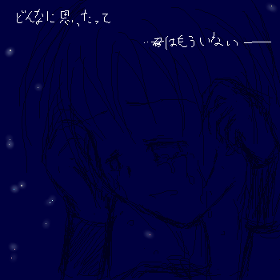
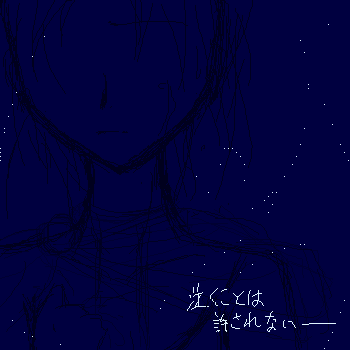

えーっと…。
色々と、ね。うん。我慢できなかったんです。
あのキャラやこのキャラが泣いてようと、
っつーか、大泣きだろうと、
…むしろ慟哭っていうか、叫んでても、
むしろ大好物。
そんな方は、スクロールどうぞ。
今の所、２枚くらいあります。あ、あははは；；
ネタバレを含んでいますので、
原版をラストエピソードまで読んだという方のみ、どうぞです。
・・・—————————————————————・・・
駄目
駄目駄目駄目 駄目——
泣いたら駄目
思い出したら駄目
心配をかけたら駄目
……駄目だって
言っているのに
今更で 今更遅くて もう届かない
届かない 届かない
伝えたかった言葉のうちの １％も伝えぬうちに
君はまたいなくなってしまった
伝えられずに残った言葉の数々 一体どうすればいい？
…どこに いるの…
会いたい会いたい会いたい会いたい会いたい会いたい会いたい———
全てが架空の物語になってくれるなら
もうオイラは 何も願わない
全てが嘘になるのなら———

大塚愛さんの「プラネタリウム」が似合うんじゃないかな…とか。
絵中の文も、こっそり引用しちゃったヤツです；；（ぅおい！；
……で、絵ですけど。
あれです、多分。ファイナルステージ〜ラストエピソードの間、くらい。
……ご、ゴメンナサイ。えへ☆（キィイインッ！/超能力炸裂）
……一生懸命フィールは強がってましたけど、
泣きたくて泣きたくて、本当は壊れてしまいそうだったんじゃないかなぁ、と。
普段は少し涙ぐみながら空見てるだけでも、
落ち込んでる日とか、ふとしたキッカケとかで、一人で大泣きしてる、とか。…むしろ叫んでしまえ。（鬼
人間性が疑われそうですＮＥ！㊥ｄ
…その、すいません。キャラクターイメージソングを漁ってたらこんな事になっちゃったんです。
本当はもっと泣かせるはずだったんですが、描いてるほうが耐えられなくなったのでここ止まり。
……慟哭、って描くのに忍耐がいるよなぁ…＾＾；
・・・—————————————————————・・・
泣くことは 許されない
伝えることも 許されない
願うことさえも 許されない———
左胸の傷の意味を知っているのは私だけ
それでいい
あんな忌まわしい記憶
思い出してはいけない 取り戻さない方が良い
小指で誓われた約束を覚えているのも私だけ
それで いい ……———
それでいい——
………それでいいと こんなにも言っているのに
どうして”私”は聞き入れてくれない……！
どうして 私だけ が 思い出してしまったのか
前に進むことも 後ろに進むこともできない
願うことも 願うことをやめることも できない
いっそのこと お前の手で———……

で、上のクリスケ絵の対バージョン。
……や、もう、なんと言うか。色々すいませんでしたorz
今現在、サイト版の四勇者はステージ２——前世のことを思い出しているのは、カーレッジだけです。
それを伝えることは許されない。
それが辛くて泣く事も、心配をかけてしまうから出来ない。
約束を覚えているのも、当然彼一人。
しかし、クリスケ…フィールが、約束を思い出すということは、
過去の忌まわしい記憶も一緒に思い出してしまうということ。
当然、カーレッジはそれを望んではいない。
でも、彼はそこで約束を捨ててしまえるほどの器でもなく。
精神的に、ものっすごくキツいんじゃないかな。
クリスケが「フィール」の記憶を取り戻すまでは、
きっと勇者たちの中で一番可哀想なのはカーレッジ。
それ以降…は、どうなるかなぁ…？；
ちなみに——元の仲間たちが、勇者として集い始めても、
やっぱり過去の事を覚えているのは、しばらくの間彼一人。
不自然に思われないように、過去のことは胸に押し隠して、「国王」の仮面を被らなければいけない、という。
…うわ、頑張れ。（他人事/スターシューティング襲来）
ああぁあ、早く本編そこまで書きたいなぁ…！（笑
や、…なら絵描いてないで書けって話なんですけれどもorz
２００６．５．２４ ＵＰ